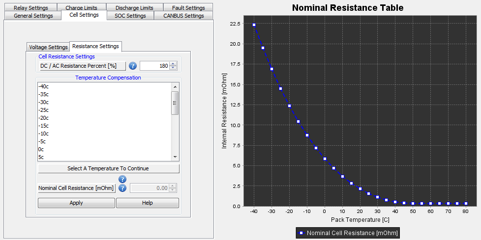

These settings relate to how the characteristics of the battery pack change with the temperature. Specifically, it allows the user to specify what the nominal (or default) internal resistance (impedance) and temperature compensation values will be at a given temperature as well as any voltage and capacity compensation for temperature conditions.
Associated Parameters:
| < Cell Settings | DC / AC Resistance Percentage > |